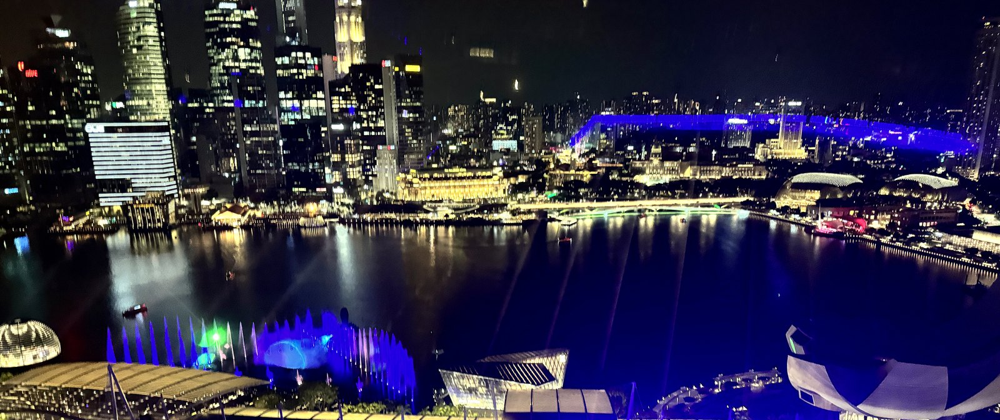

TRAVEL SHIORI・2023 NOVEMBER
シンガポール
マーライオンとチリクラブ、光と音のスペクタクル。常夏の街で過ごした 3日間の記録
2023.11.2（木）→ 11.4（土）
HIGHLIGHTS
この旅のハイライト
DAY1・マーライオン公園
チャンギ到着後、まずはシンガポールの象徴に会いに。
DAY1・ガーデンズバイザベイ
夕暮れどきのスーパーツリー・グローブへ。
DAY1・ナイトサファリ
19:15スタート。暗闇の中で動物たちに出会う2〜3時間。
DAY2・スペクトラ
マリーナベイサンズを舞台にした、光と水のショー。
DAY3・JEWEL レインボルテックス
帰国前、チャンギ空港の巨大な室内滝で最後の観光。
ITINERARY
3日間の行程
DAY1
DAY2
DAY3
DAY 1
チャンギ到着。マーライオンとガーデンズバイザベイ、そしてナイトサファリ
マレーシア
シンガポール島
セントーサ島
シンガポール海峡
チャンギ空港
DAY1到着／DAY3出国
マンダイ
DAY1・ナイトサファリ
マリーナベイサンズ
滞在ホテル
マーライオン公園
ガーデンズバイザベイ
DAY1
カトン
DAY2
アラブストリート
DAY2
チャイナタウン
DAY2
午前
羽田空港 発 → チャンギ国際空港 着
シンガポールへ出発。到着後、そのまま市内へ。
昼
Ya Kun Kaya Toast 本店
カヤトースト
シンガポール名物カヤトーストの老舗店で腹ごしらえ。
カヤトースト vlog ↗
午後
マーライオン公園
シンガポールの象徴、マーライオンに会いに。
午後
マリーナベイサンズ 到着・手荷物預かり
チェックインにはまだ早いので、荷物だけ預けて観光へ。
午後
スカイパーク展望デッキ
屋上から街とマリーナを一望。
夕方
ガーデンズバイザベイ
夕暮れどきのスーパーツリー・グローブを散策。
18:00
夕食：ウルウル・サファリ レストラン／BONGO BURGERS／アーメン・ビストロ
ナイトサファリ園内で夕食の候補。
19:15
ナイトサファリ
2〜3時間
世界初の夜間動物園。暗闇の中トラムやウォーキングトレイルで動物たちに会う。
🌙
泊：マリーナベイサンズ
翌朝は屋上のインフィニティプールから一日をスタート
DAY 2
マクスウェルのチキンライスから、チャイナタウン・アラブストリート巡り。夜はスペクトラ
マレーシア
シンガポール島
セントーサ島
シンガポール海峡
チャンギ空港
DAY1到着／DAY3出国
マンダイ
DAY1・ナイトサファリ
マリーナベイサンズ
滞在ホテル／夜:スペクトラ
チャイナタウン
マクスウェル・富の泉
アラブストリート
リトルインディア・ハジーレーン
マーライオン公園
カトン
Chin Mee Chin・ジャンボシーフード
朝
マクスウェル・フードセンター
スイカジュースと、天天海南鶏飯のチキンライス。
午前
チャイナタウン（牛車水）
中華街をのんびり散策。
午後
富の泉（サンテック・シティモール）
世界最大級の噴水。
午後
アラブストリート／リトルインディア／ハジーレーン
エスニックな街並みを歩いてまわる。
午後
クラーク・キー／エメラルドヒル
川沿いの街並みとコロニアル建築のショップハウス。
夕方
Chin Mee Chin
ラクサ
カトンの老舗でラクサ。
ラクサ vlog ↗
夕方
カトン散策
プラナカン様式のカラフルな街並み。
夜
夕食：ジャンボシーフード（チリクラブ）／レッドハウス
シンガポール名物、チリクラブをがっつり。
20:00
マリーナベイサンズ スペクトラ
15分間
金・土は20時／21時／22時の3回開催。
夜
シンガポール リバークルーズ
スペクトラを川の上から眺める。
19:45／20:45
ガーデンラプソディ
スーパーツリーの光と音のショー、1日2回。
🌙
泊：マリーナベイサンズ
光と水のショーを見ながら、シンガポールの夜を満喫
DAY 3
朝食のカヤトースト、シンガポールフライヤーとJEWELを経て帰国
マレーシア
シンガポール島
セントーサ島
シンガポール海峡
チャンギ空港
JEWEL・帰国
シンガポールフライヤー
セントアンドリュース大聖堂
マンダイ
DAY1・ナイトサファリ
マリーナベイサンズ
滞在ホテル
マーライオン公園
チャイナタウン
DAY2
カトン
DAY2
朝
Tong Ah Eating House
カヤトースト
最終日の朝食も、やっぱりカヤトースト。
午前
シンガポールフライヤー
大観覧車から街を一望。
午前
セントアンドリュース大聖堂
白亜のコロニアル建築をお参りがてら見学。
午後
JEWEL
買い物
室内滝レインボルテックスを眺めながら、最後のお買い物。
空港
チャンギ国際空港 → 羽田空港
3日間、おつかれさま！
🌙
マーライオンとチリクラブ、光のショーの記憶を持って帰国
マリーナベイサンズを拠点にした2泊3日
行程へ